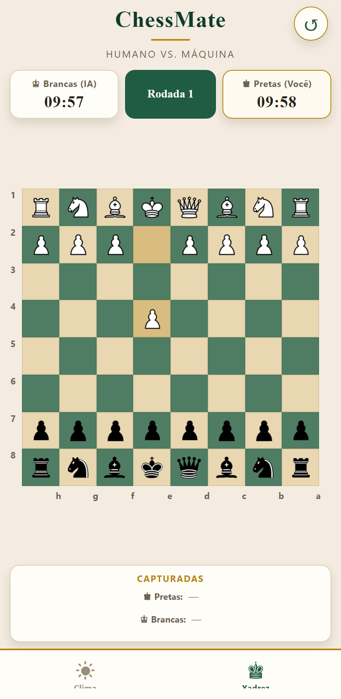
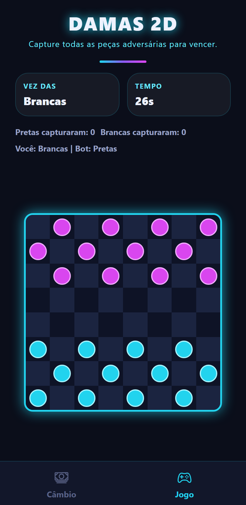

Me formei em Análise e Desenvolvimento de Sistemas pela UniViçosa (2024–2026) já carregando 7+ anos de prática. Isso deu ao curso um sabor bem particular: em vez de aprender do zero, foi uma conversa constante entre o que eu já rodava em produção e a base formal. Cada disciplina batia com um problema que eu já tinha resolvido "no braço" anos antes — e me dava o nome e o porquê daquilo. Mas seria desonesto pintar só o lado bonito: o ensino ficou aquém do que eu esperava, e boa parte da profundidade veio de mim, estudando por conta.
I graduated in Systems Analysis and Development at UniViçosa (2024–2026) already carrying 7+ years of practice. That gave the degree a peculiar flavor: instead of learning from scratch, it was a constant dialogue between what I already ran in production and the formal foundation. Each subject matched a problem I'd solved "by hand" years before — and gave me the name and the why for it. But it'd be dishonest to paint only the pretty side: the teaching fell short of what I'd hoped for, and much of the depth came from me, studying on my own.
A UniViçosa e o cursoUniViçosa and the course
A UniViçosa é uma faculdade particular de Viçosa, Minas Gerais — a mesma cidade da UFV, onde cursei Matemática. O ADS é um tecnólogo de dois anos (quatro períodos, mais o eixo de projetos integradores), com foco prático em desenvolvimento de software. No papel, o currículo é abrangente: dos fundamentos de programação a IA, big data, redes, segurança, mobile e arquitetura. Foi por isso que me matriculei — queria um diploma formal que carimbasse anos de estrada e fechasse algumas lacunas de fundamento.
UniViçosa is a private college in Viçosa, Minas Gerais — the same town as UFV, where I studied Mathematics. The ADS program is a two-year technologist degree (four terms plus an integrated-projects track), focused on hands-on software development. On paper the curriculum is broad: from programming fundamentals to AI, big data, networking, security, mobile and architecture. That's why I enrolled — I wanted a formal degree to stamp years on the road and close a few foundational gaps.
Sendo honesto: o ensino ficou aquémBeing honest: the teaching fell short
Esperava mais da graduação em si. Boa parte das aulas ficava na superfície, com pouca profundidade técnica e ritmo abaixo do que eu buscava — e a régua de exigência raramente puxava o aluno para cima. Quem me deu densidade não foi a sala de aula: foi o autodidatismo. Documentação, código aberto, construir coisas de verdade e quebrar a cara nelas — esse foi o meu currículo real.
I expected more from the degree itself. A lot of the classes stayed on the surface, with little technical depth and a pace below what I was after — and the bar rarely pushed students upward. What gave me depth wasn't the classroom: it was self-teaching. Documentation, open source, building real things and failing at them — that was my real syllabus.
Não é reclamação: é contexto. O diploma tem valor, mas o motor do aprendizado sempre fui eu. A faculdade me deu a estrutura e o carimbo; a profundidade, corri atrás.
This isn't a complaint — it's context. The degree has value, but the engine of learning was always me. College gave me the frame and the stamp; the depth, I chased myself.
Onde a teoria valeu a penaWhere the theory paid off
Apesar disso, houve ganho real — sobretudo em formalizar a intuição. Eu já vinha escalando servidores de jogos e automações; algumas disciplinas me deram o vocabulário e o rigor para nomear o que a prática já pedia aos gritos.
Even so, there was real gain — mostly in formalizing intuition. I'd already been scaling game servers and automations; a few subjects gave me the vocabulary and rigor to name what practice was already screaming for.
Onde teoria e experiência se encontraramWhere theory and experience met
- Estrutura de Dados:Data Structures: implementei árvore binária, fila, pilha, grafo, lista encadeada e tabela hash em C e Python — o que antes eu usava "pronto", passei a entender por dentro.I implemented binary tree, queue, stack, graph, linked list and hash table in C and Python — what I used to consume "ready-made", I now understand from the inside.
- Banco de Dados:Databases: modelagem Entidade-Relacionamento e normalização deram método ao que eu fazia por instinto com MySQL/MongoDB.Entity-Relationship modeling and normalization brought method to what I did by instinct with MySQL/MongoDB.
- Engenharia de Software I & II:Software Engineering I & II: nomear padrões, requisitos e arquitetura que a prática já pedia aos gritos.naming the patterns, requirements and architecture that practice was already screaming for.
- Redes, Cloud & Sistemas Distribuídos:Networking, Cloud & Distributed Systems: a base formal por trás das VPS, Docker e deploys que eu já operava.the formal grounding behind the VPS, Docker and deploys I already ran.
Projetos que nasceram no cursoProjects born in the course
O que salvou o curso, para mim, foram os projetos. Foi construindo — e não assistindo aula — que o conteúdo virou algo concreto. Entre atividades e projetos integradores, saíram aplicações reais:
What saved the course, for me, were the projects. It was by building — not by sitting in class — that the content became something concrete. Across assignments and integrated projects, real applications came out:
TicketFlow — TCC (Gestão de Projetos)Capstone (Project Management)
Meu trabalho de conclusão: uma aplicação web de venda de ingressos com QR Code dinâmico, feita em Next.js + TypeScript, com testes automatizados (Playwright e Vitest) e empacotamento em Docker. A monografia (LaTeX/ABNT) documenta a fundamentação e a arquitetura do sistema. Ver o projeto completo →
My capstone: a web app for ticket sales with dynamic QR codes, built in Next.js + TypeScript, with automated tests (Playwright and Vitest) and Docker packaging. The monograph (LaTeX/ABNT) documents the system's rationale and architecture.

ChessMate & DamaLink — Mobile & GamesMobile & Games
ChessMate: um xadrez mobile em React Native (Expo) com IA própria (negamax com poda alfa-beta) — dá para jogar contra a máquina, com relógio e captura de peças. DamaLink: app híbrido que junta um conversor de câmbio ao vivo (AwesomeAPI) com um jogo de damas contra bot. Foi onde a lógica de algoritmos virou algo jogável na palma da mão.
ChessMate: a mobile chess game in React Native (Expo) with a custom AI (negamax with alpha-beta pruning) — you play against the machine, with a clock and captured-piece tracking. DamaLink: a hybrid app pairing a live currency converter (AwesomeAPI) with a checkers game against a bot. This is where algorithm logic became something playable in your hand.


Inteligência Artificial & Big DataArtificial Intelligence & Big Data
Práticas de IA em Python/Jupyter e uma disciplina de Gestão de Dados, Big Data e Data Mining — governança, mineração e a ponte direta com o que hoje faço com agentes de IA na plataforma BAttomic.
Hands-on AI in Python/Jupyter and a course on Data Management, Big Data and Data Mining — governance, mining and the direct bridge to what I now do with AI agents on the BAttomic platform.
Um currículo de ponta a pontaAn end-to-end curriculum
Foram dois anos intensos cobrindo praticamente todo o espectro de construir software — dos fundamentos ao que raramente aparece junto num só currículo:
It was two intense years covering nearly the whole spectrum of building software — from the fundamentals to things that rarely show up together in one curriculum:
O que mudou em como eu construoWhat changed in how I build
A graduação não me tornou desenvolvedor — eu já era, e o que me manteve evoluindo continuou sendo o estudo por conta própria. Mas ela me tornou melhor em alguns pontos: mais rigoroso ao modelar dados, mais consciente ao escolher uma estrutura, mais claro ao comunicar arquitetura. Junto da minha base em Matemática pela UFV, fechou um jeito de pensar que aplico todo dia: lógica, método e a coragem de simplificar.
The degree didn't make me a developer — I already was one, and what kept me growing was still self-directed study. But it did make me better in some ways: more rigorous when modeling data, more deliberate when choosing a structure, clearer when communicating architecture. Together with my Mathematics background (UFV), it shaped a way of thinking I apply every day: logic, method and the courage to simplify.
Veja o que nasceu dessa misturaSee what came out of this mix
Da teoria à produção: dá uma olhada nos projetos que unem essa base com 7+ anos de prática.From theory to production: take a look at the projects that unite this foundation with 7+ years of practice.
Ver projetosSee projects